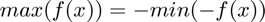
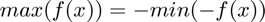
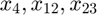

Contents
% Author: Justice Amoh % Description: ENGS 104 - Optimization: Assignment 2 % Date: 10/26/2015
Problem 1
Linear program in augmented form: such that  .
.
% load file a2p1.mat with vars a, b and c. load data/a2p1.mat
Part A
Which feasible solution has the largest value for  ? 
? 
f = zeros(size(c)); f(23) = -1; Aeq = a; beq = b; lb = 0; x = linprog(f,[],[],Aeq,beq,lb);
Part B
Is there a basic feasible solution involving  ?
f = zeros(size(c));
f(4)=1; f(12) = 1; f(23) = 1;
Aeq = a;
beq = b;
lb = 0;
x = linprog(f,[],[],Aeq,beq,lb);
% *Answer* : Yeah, there is a feasible solution involving just $x_{4}, x_{12}, x_{23}$
Part C
f = c; Aeq = a; beq = b; lb = 0; x = linprog(f,[],[],Aeq,beq,lb);
Warning: Length of lower bounds is < length(x); filling in missing lower bounds
with -Inf.
Exiting: One or more of the residuals, duality gap, or total relative error
has stalled:
the dual appears to be infeasible (and the primal unbounded).
(The primal residual < TolFun=1.00e-08.)
Warning: Length of lower bounds is < length(x); filling in missing lower bounds
with -Inf.
Exiting: One or more of the residuals, duality gap, or total relative error
has stalled:
the dual appears to be infeasible (and the primal unbounded).
(The primal residual < TolFun=1.00e-08.)
Warning: Length of lower bounds is < length(x); filling in missing lower bounds
with -Inf.
Exiting: One or more of the residuals, duality gap, or total relative error
has stalled:
the dual appears to be infeasible (and the primal unbounded).
(The primal residual < TolFun=1.00e-08.)
Problem 2
Part B - L1 Norm
Question:  for
for
[n,m] = size(a); Aeq = [+a -eye(n); ... -a -eye(n)]; beq = [b ; -b]; f = [zeros(1,m) ones(1,n)]; x = linprog(f,[],[],Aeq,beq); % check dimensionality % for $\min_{u} \left \| u*a-c \right \|_{\1}$ aa = a'; bb = c'; [n,m] = size(aa); Aeq = [+aa -eye(n); ... -aa -eye(n)]; beq = [bb ; -bb]; f = [zeros(1,m) ones(1,n)]; x = linprog(f,[],[],Aeq,beq); % check dimensionality
Part A - Infinity Norm
Question: 
Optimization terminated.
Exiting: One or more of the residuals, duality gap, or total relative error
has stalled:
the primal appears to be infeasible and the dual unbounded since
the dual objective > 1e+10
and the primal objective > -1e+6.